极坐标绘图
问题
你想去画一个极坐标图
解决方案
使用PolarPlot，它以极坐标系中的角度为半径，在 (x) 轴上以0为轴，在 (y) 轴上以(\dfrac{\pi}{2})为轴画图。
GraphicsGrid[{
{PolarPlot[1, {\[Theta], 0, 2 Pi}, PlotLabel -> "圆"],
PolarPlot[\[Theta], {\[Theta], 0, 2 Pi}, PlotLabel -> "螺线"]},
{PolarPlot[Sin@(5 x), {x, 0, 2 Pi}, PlotLabel -> "环状图"],
PolarPlot[1/(1.5 + Sin@(5 x)), {x, 0, 2 Pi}, PlotLabel -> "星鱼图"]}
}]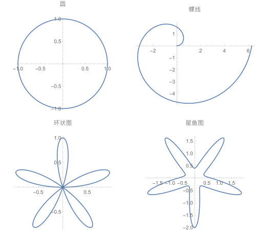
讨论
与Plot一样，你可以同时绘制多个函数。
PolarPlot[{1, 0.5 Cos[20], Sin[Exp[\[Theta]/2]]}, {\[Theta], 0,
2 \[Pi]}, ImageSize -> 350,
PlotStyle -> {Directive[Black, Dashed], Directive[Black, DotDashed],
Directive[Black, Dotted]}]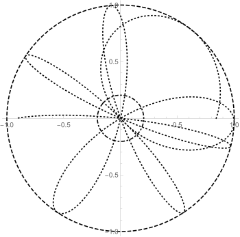
PolarPlot的选项基本上与Plot相同
一个明显的不同是：PolarPlot没有与填充(Filling)相关的选项。
还要注意，宽高比(AspectRatio)在默认情况下是自动的(Automatic)，即宽高比是1，这是有道理的，因为对称是极坐标图的基本美学。
Complement[Options[PolarPlot], Options[Plot]]{AspectRatio -> Automatic, Axes ->
Automatic, AxesOrigin -> {0, 0},
MeshFunctions -> {#3 &},
PlotRange -> Automatic, PolarAxes -> False,
PolarAxesOrigin -> Automatic,
PolarGridLines -> None,
PolarTicks -> Automatic} 从上面的例子中我使用了Complement(补集),使用这个命令可以找到不属于PolarPlot的选项.
可以看到和我说的是一样的.
参数图的绘制
问题
你需要去绘制参数图,比如说你想绘制这样的参数图.
$${x=x[t],y=y[t]}$$
解决方案
这是一些常见的(Lissajous)曲线。请注意参数绘图如何以列表的形式获取一对函数。
GraphicsGrid[{{ParametricPlot[{Sin[Pi u], Sin[2 Pi u]}, {u, 0, 2},
PlotLabel -> "(1:2)"],
ParametricPlot[{Sin[2 Pi u], Sin[Pi u]}, {u, 0, 2},
PlotLabel -> " (2:1)"]}, {ParametricPlot[{Sin[5 Pi u],
Sin[4 Pi u]}, {u, 0, 2}, PlotLabel -> "(5:4) "],
ParametricPlot[{Sin[9 Pi u], Sin[8 Pi u]}, {u, 0, 2},
PlotLabel -> "(9:8) "]}}, Background -> White, ImageSize -> 400]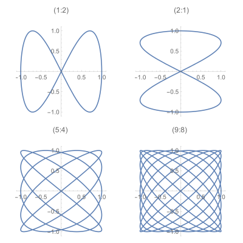
讨论
这是一个显示相移对频率信号影响的动画。
GraphicsGrid[{{ParametricPlot[{Sin[Pi u], Sin[2 Pi u]}, {u, 0, 2},
PlotLabel -> "(1:2)"],
ParametricPlot[{Sin[2 Pi u], Sin[Pi u]}, {u, 0, 2},
PlotLabel -> " (2:1)"]}, {ParametricPlot[{Sin[5 Pi u],
Sin[4 Pi u]}, {u, 0, 2}, PlotLabel -> "(5:4) "],
ParametricPlot[{Sin[9 Pi u], Sin[8 Pi u]}, {u, 0, 2},
PlotLabel -> "(9:8) "]}}, Background -> White, ImageSize -> 400] 你也可以用ParametricPlot去画一个参数曲面
在这里引入了第二个参数。
ParametricPlot[{r^2 Cos[Sqrt[t]], Sqrt[r] Sin
[r t]}, {t, 0, 2 Pi}, {r,1, 2}, Mesh -> Full]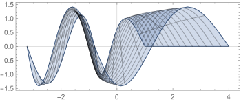
关于这个函数更多的可以看帮助文档。
数据的绘制
问题
你已经有一套数据了，你想把这些数据画出来。
解决方案
利用ListPlot
ListPlot[Table[Prime@i/(1 + Log[Fibonacci[i]]), {i, 1, 100}],
ImageSize -> 350]
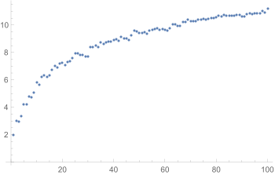
上面这个图，我们使用了一个列表，也就是x值列表
ListPlot[Table[{PrimePi[i], Prime[i]}, {i, 1, 100}], ImageSize -> 350]
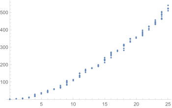
上面这个图，我们使用了一个列表，也就是( (x,y) )值列表
讨论
ListPlot与Plot大部分选项都一样;
在这里我不再重复它们，我只展示它们之间的区别。
Complement[Options[ListPlot], Options[Plot]] {Axes -> Automatic, DataRange -> Automatic, Frame -> Automatic,
InterpolationOrder -> None, IntervalMarkers -> Automatic,
IntervalMarkersStyle -> Automatic, Joined -> False,
LabelingFunction -> Automatic, MaxPlotPoints -> \[Infinity],
PlotLayout -> "Overlaid", PlotMarkers -> None,
PlotRange -> Automatic}DataRange(范围)
DataRange允许你为 (x) 轴指定最小值和最大值。
data = Table[Sin[x], {x, -10, 10, 0.1}];
GraphicsRow[{ListPlot@data, ListPlot[data, DataRange -> {-10, 10}]},ImageSize -> 400]
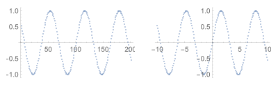
在这个图中，假设x轴是整数值。
InterpolationOrde(内插阶数)
InterpolationOrde(内插阶数)与Joined(连接点)一起使用，以控制点之间绘制的线被插值的方式
InterpolationOrder->n指定应该在数据点间进行 n 次多项式的插值.
n=1表示直线
n 较高会让图像很平滑
尽管对于大多数实际情况来说来说，n=2 就足够了。
data1 = RandomReal[{0, 2}, 20];
GraphicsColumn[
Table[ListPlot[data1, Joined -> True,InterpolationOrder -> i,
PlotLabel -> ("内插阶数为" <> ToString@i),
ImageSize -> Large], {i, {1, 2, 3, 4}}]]
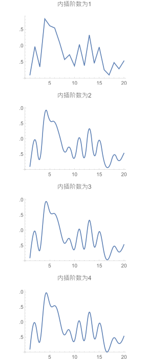
将两个或多个图合成一个图
问题
你想要在一个图表中混合几种不同的图。
解决方案
用Show函数可以解决这个问题。
plot = Plot[x, {x, 1, 100}];
listplot = ListPlot[Table[Prime@x, {x, 1, 100}]];
Show[plot, listplot, Background -> White, ImageSize -> 350]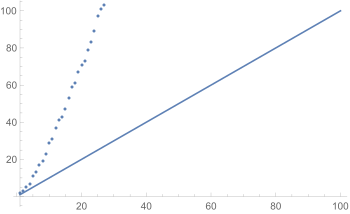
讨论
在使用Show组合绘图时，可以覆盖各个图中使用的选项。
例如，你可以覆盖轴的位置、纵横比和绘图范围。
看下面这个例子。
g1 = Plot[x^2 - x, {x, 1, 10},AspectRatio -> 0.2,
AxesOrigin -> {1, 50}];
g2 = Plot[x^2 + x, {x, 1, 10}, AspectRatio -> 0.8,
AxesOrigin -> {6, 30}];
GraphicsColumn[{g1, g2,
Show[g1, g2, AspectRatio -> 1, PlotRange -> All,
AxesOrigin -> {0, 0}]}, ImageSize -> 35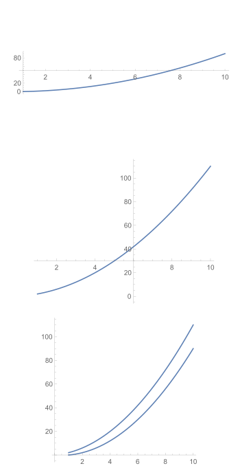
Show可以用来组合任意图形。例如，可以为图形提供背景图像。
i=你的图片;
Show[i, Plot[x, {x, 0, 700}, PlotStyle ->
{Red, Thick}],
PlotRange -> All, ImageSize -> 350]
Export["tu11.svg", %]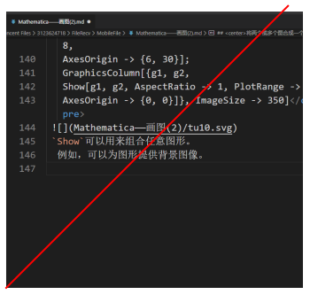
我最喜欢的一个数学插图是通过一个函数的迭代来实现收敛.
这里，
NestList执行12次迭代。我们每两个复制一次，然后展开，并以1为起点把它们分成对，从而得到一些点来说明起点1到x = Cos[x]的解的收敛性。
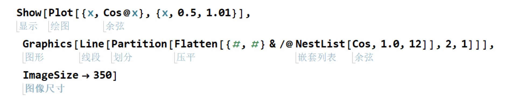
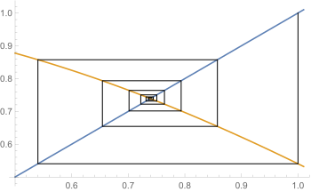
说明
Show使用以下规则来组合图像:使用图像区间的并集。
除非被
Show的选项覆盖，否则使用第一个plot中的选项的值。